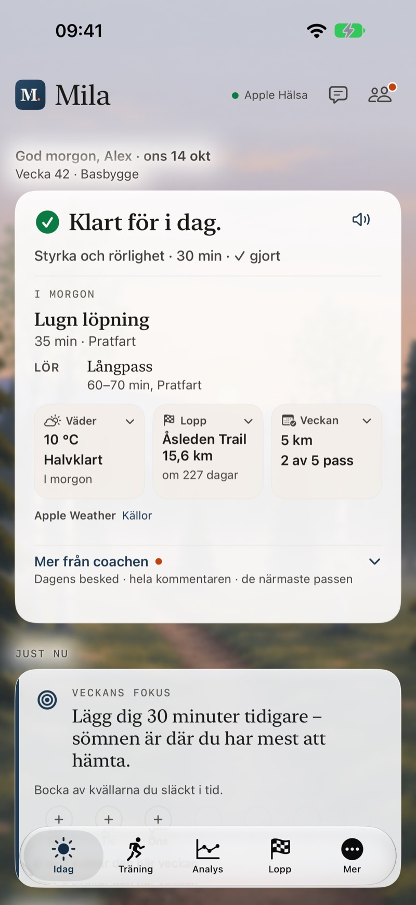
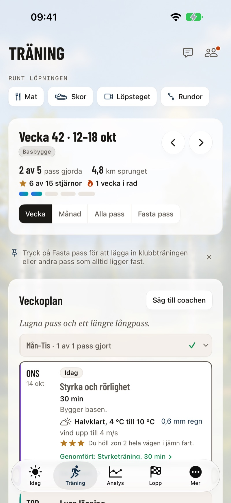
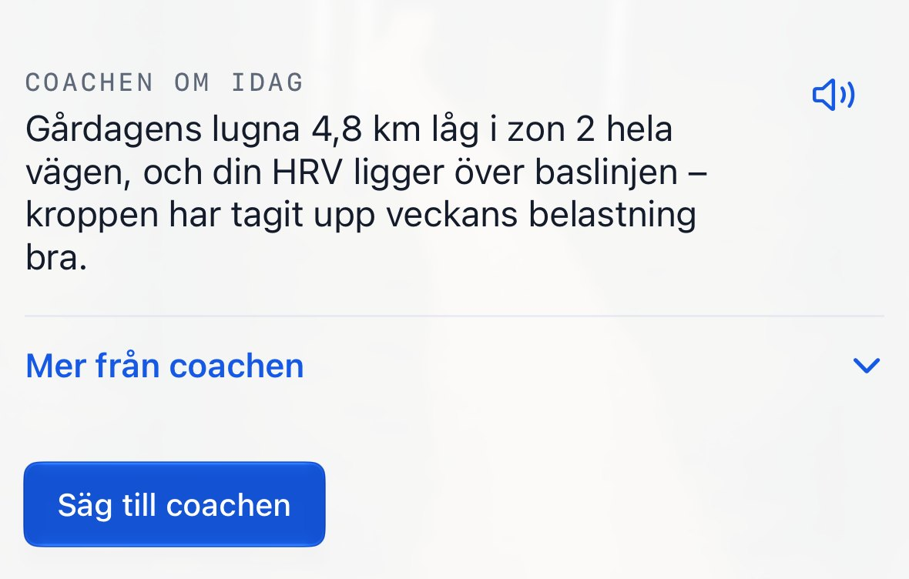

Rätt pass. Rätt dag.
En coach som läser av din kropp och ditt liv varje morgon, hela vägen till mål.
Mila utgår från din egen data, din form i dag och ditt mål. Varje morgon kommer coachens besked först – redo, normal dag eller ta det lugnt – och sedan dagens pass som det ser ut nu: träning som passar ditt liv, gör dig starkare mot målet och inte kräver att du tolkar en enda graf.


Mer av träningen, mindre att fundera på
Rätt pass varje dag – efter hur du mår och hur livet ser ut.
Därför är Mila annorlunda
Klockan mäter. Mila gör det till rätt pass för dig.
Mila-känslan
Rätt pass. Rätt dag. Allt i Mila utgår från det.

Du i mitten. Coachen ser helheten.
Varje morgon säger coachen vad som passar i dag. Pass, mat, skor, sömn och vardag hänger ihop – och allt utgår från dig.
- Passdagens pass
- Lopphela vägen till mål
- Kroppenpuls och känsla
- Sömn och vilavila räknas
- Matbränsle och återhämtning
- Skorslitage, nästa par
- Kläderefter vädret
- Vardagenjobb och resor
En coach ett tryck bort
Varje morgon får du coachens besked och dagens pass, bästa tiden att springa och vad du ska ha på dig i vädret. Kommentaren kan du få uppläst. När livet ändras säger du till coachen med egna ord, och undrar du något frågar du coachen – svaren känner din data. När veckan är slut – söndag kväll eller senast måndag morgon – kommer veckokollen och nästa veckas plan.

Mila på handleden
Milas app på Apple Watch visar dagen, spelar in loppet och frågar hur passet gick. Andra klockor fungerar via Apple Hälsa.
Allt en löpare behöver
Från första lugna passet till loppdagen.
Veckoplan och analys
Veckoplan med styrkeprogram och pass du kan flytta. Efter passet plan mot genomfört, rutten färgad efter tempo och liknande pass. Dina mönster, Jämfört med, rekord över tid och Mina mil – ditt löparår.
Milas loppregister
Officiella lopp med karta, höjdprofil, vätskekontroller och arrangörens länk – eller ladda upp banan själv (GPX, KML, TCX eller zip). Varje lopp i registret har också en egen sida: milacoach.app/lopp.
Inför och efter loppet
Prognos, tempoplan efter höjden, energiplan, Är jag redo?, loppguide och loppmorgon. Efteråt kilometertider mot planen, coachens loppanalys och ditt officiella resultat.
Löpsteget
Filma i appen eller välj en film. Bara stillbilder skickas, med ansiktena suddade, och filmen lämnar aldrig telefonen. Coachen ger observationer och övningar som vävs in i planen och följs upp över tid.
Skor
Coachen bedömer hur länge varje sko håller för just dig – ungefär hur många kilometer och veckor i din takt. Läs in din skologg från en bild eller en CSV-fil.
Mat
Fota eller beskriv måltiden, så uppskattar coachen den och kopplar den till träningen. Rätta med egna ord, visa utan siffror eller logga med Siri.
Dela
Bilder av pass och lopp med en bakgrund i Milas stil från platsen, ett textförslag och en rad från coachen.
I kalendern
Coachens pass i den kalender du väljer, vid den tid vädret passar bäst.
Igång på några minuter
Berätta om dig och ditt mål, se hur coachen uppfattade dig och få din första vecka. Prova Mila Coach gratis i en vecka.
Fungerar med din klocka
Mila läser dina pass från Apple Hälsa, så du behöver ingen särskild klocka.
Guider
Din data är din
Data från Apple Hälsa läses på telefonen; en sammanfattning går till coachen, efter ditt godkännande, tillsammans med det du kopplar eller skickar (Polar, måltidsfoton, bilder av skologgen, stillbilder ur filmer av löpsteget). Ditt konto lagras i EU (Irland). Coachens texter skrivs av en extern AI-tjänst i USA enligt EU:s standardavtalsklausuler. Mila säljer aldrig din data och använder den aldrig för reklam, och du kan radera kontot och allt i det när som helst. Mila ger allmänna träningsråd, inte medicinsk rådgivning.
Rätt pass. Rätt dag.